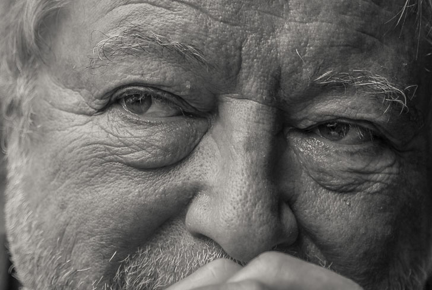

一个永恒的追求|纪念加拿大著名摄影人Michael Reichmann
长沙杨飞
Michael Reichmann at work
2016年5月18日，加拿大著名摄影师Michael Reichmann因癌症去世，终年71岁。Michael
Reichmann在中国可能名气不大，但他在英文摄影圈是大名鼎鼎的，这部分是因为他1999年创办的摄影网
www.luminous-landscape.com。和现在大部分着迷于参数的技术派摄影网站不同，luminous-landscape主要是从摄影者实际操作方面来评测器材的。
Michael
Reichmann本人从事摄影五十多年。作为记者、编辑和摄影教育家，他在影像圈的影响是众所公认的。我从2000年开始就是他的忠实读者。应该说，在风光和人文摄影方面，Michael
Reichmann的很多摄影理念对我帮助良多。
从辅助器材、各种相机镜头到最终输出的大幅面打印机，他是那种对器材有着极端追求的实际操作型技术派，但他最看重的又是摄影作品本身。他的系列评测文章既包括便宜的口袋机，也包括世界最贵的中画幅数码背。我喜欢Michael的写作风格。他的行文活泼而又点到为止，精彩之处常让人会心微笑。读他的文字是一种享受。非常伤感，从此世间再无其人其文。
2003年时候我翻译过他的一篇文章，是关于镜头选购的。今天稍加修改刷在这里，愿Michael 安息。

Michael Reichmann，此图由Nick Devlin拍摄
Lens Sharpness - The Never-Ending Quest
But How Sharp Is it Really!? One of the most common questions that
I'm asked is, Is the ...lens sharper than the ... lens? A variation
on this theme is... What do you think of the ... lens? Is it sharp?
Or there's the more generic... Is a zoom lens as sharp as a prime
lens?
镜头锐度，一个永恒的追求
一个镜头的解像力到底能有多高！？最常见的一个问题通常是：镜头A比镜头B锐度高吗？类似的问题：您觉得这支镜头怎样？锐度高吗？或者更普遍点的问题诸如：变焦镜头的解像力和定焦镜头的同样好吗？
That's enough! I'm about to answer your questions, (as well as a few
that you didn't ask), and from here on, until the end of time, you
need ask them no more. And, if anyone asks you these questions,
you'll now know where to refer them. Right here.
够了！现在我就来回答你的这些问题（还包括其他你也许没问到的），从此直到地球的末日，你就再也不会问此类问题了。如果再有人问你，你知道该让他们上哪儿找答案
－ 这里。
What's All This About Sharpness Anyhow? There are photographers who
love to test and compare things. When they make prints or examine
their slides under a loupe, they are not looking to see if they have
properly captured a special location, light or subject. They are
first and foremost concerned with technical quality rather than
image quality.
到底为什么会有这么多摄影者关心镜头的锐度？因为摄影者总是喜欢测试和比较。当他们把照片冲洗出来或用高倍放大镜仔细看他们的幻灯片时，通常他们不是去看自己是否拍得正确，他们最关心的总是设备的技术指标而不是照片本身。
Consequently they fret and fuss. They choose primes over zooms. They
buy the most expensive brands of bodies and lenses. But then when
they have them, what do they do? Do they settle down t pursue their
photography? No, they fuss and fret some more, worrying that if only
they had a sharper lens their photography would somehow improve.
Sound familiar?
自然的，他们大惊小怪，然后焦躁不安。他们扔掉变焦镜去买定焦。他们去买最昂贵的机身和镜头。但是，买来之后，他们又是怎么做的呢？专心致志的去追求摄影艺术吗？没有，他们更加大惊小怪，更加焦躁不安，觉得要是有一个解像力更好的镜头，他们的照片肯定会更好。嗯，听起来耳熟？
There isn't a photographer alive who doesn't care about how sharp
his or her lenses are. It's one of the primary manias of anyone
playing this game. We buy and sell different brands of cameras in
search of the holy grail of sharpness.
地球上没有不关心镜头解像力的摄影师。这也是任何摄影装备焦躁狂的典型症状。我们不停的买进卖出不同品牌的相机和镜头，为了有一天能到达锐度的天堂。
Should I trade in my Nikon gear for Canon? Should I trade in my
Canon outfit for Nikon glass? damn, maybe I should buy a Leica
system. I hear Leica lenses are fantastic. But, how about Contax?
Those Zeiss lenses have great reputations. But boy, are those lenses
ever expensive. Are they worth it?
我要不要把尼康相机卖了换佳能？我要不要把佳能镜头卖了换尼康？NND，也许我应该买一个莱卡，我听说莱卡镜头绝对的好；但是，也许康太时（CONTAX）更好？它们用的蔡司镜头可是名声在外啊。不过，这些镜头都那么贵。它们真的值那个价钱？？？
I know you've never had these thoughts, but you have heard from lots
of other photographers who have. Go to any of the on-line discussion
boards. You will find that talk about lens sharpness represents
probably half the discussions — most of it filled with
unsubstantiated opinions and mistruths.
我知道也许你并没想到这些问题，但你肯定听别人谈论过。去网上那些摄影论坛看看，一半以上的篇幅都在讨论类似的问题，许多帖子都缺乏真凭实据，还有些根本就是在误导。
After 40 years as a professional photographer as well as an ardent
amateur, as a teacher and as a journalist, I've learned certain
things about photography and photographic equipment, and specific to
this topic — about lens sharpness, its importance as well as,
frequently, its lack of importance.
做为一个狂热的摄影爱好者以及职业摄影师四十余年，同时也是摄影记者和讲师，本人熟悉摄影的方方面面。摄影器材（特别是本文所要讨论的话题－镜头锐度），当然是重要的－
不过，更多的时候，并不是那么重要。
Some Cosmic Truths
I'm now going to let you in on the great truths. The ones that all
true cognoscenti know, but that are hidden from newcomers and the
otherwise uninitiated. If you're really observant you may notice
that this piece has some scattered evidence of the use of irony,
(some would call it sarcasm.) Ignore the man behind the curtain. I
stand behind every statement.
一些宇宙级事实
现在我将告诉你一些事实。所有真正的可知论者都应该知道的事实，但是它们通常不被摄影新人所了解，或者从来没人系统的论述过。如果你仔细看你会发现这篇文章有不少讥讽之辞（也许该叫挖苦？）请忽略那个幕后的人，这里的每个字都是我写的。
Finally, note before you enter the inner sanctum that I have
occasionally used the word "Usually". That's because to be a
universal truth, there must be an exception that makes it so.
Otherwise, what would we have to argue about?
最后，在你进入这个镜头锐度的最后圣殿前，请注意我在文中常用“一般来说”这个词，因为必须要把几个例外排除后绝对真理才会成立，要不然我们又怎么会争来吵去呢？
Prime Lenses are Sharper than Zooms Lenses (Usually)
The title says it all. There is no free lunch! If you want the
utmost in sharpness, don't buy a zoom lens. But, if you want greater
shooting versatility by all means do buy a zoom. You'd be a fool not
to.
定焦镜头的锐度比变焦镜头高（一般来说）
顾名思义。天下没有免费的午餐！如果你追求绝对锐度，那就别买变焦镜头。不过，如果你需要摄影灵活性，请一定买变焦镜头。不这样做那你就是傻瓜。
Why are primes sharper? A number of reasons. Zooms lenses by
necessity have more elements than primes. This makes them more
difficult to design, increases the risk of various forms of optical
aberration, and can reduce contrast and increase flare.
为什么定焦镜头锐度更高？好几个原因。因为要变焦，所以变焦镜头的镜片数目比定焦的多。这样以来变焦头就更难设计，更容易发生光学色差，镜片数目多也会减低对比度并增加光斑（特别是逆光时的反光－译者注）。
Prime lenses usually have larger apertures than zooms, and the laws
of optics say that all other things being equal (which they often
aren't) a wider aperture lens will be sharper than one with a
smaller aperture — the issue being diffraction effects.
定焦镜头通常比变焦的光圈大。光学定律（衍射定律）告诉我们－在同样情况下，大光圈镜头比小光圈的锐度高。
Having made the case for prime lenses, let me say that three of the
sharpest lenses I own, the Canon 70~200 f/2.8L IS zoom, Leica's M
series 28-35-50mm Tri-Elmar, and the Pentax 67's 55~100mm f/4.5
zoom, are as good as any primes in their formats that I've ever
used. As I said — "usually" sometimes defines the rule.
OK，这是定焦镜的一般规律，让我来说说我的三支锐度最高的镜头，它们是：佳能的70－200F2.8L
IS变焦镜；莱卡M系列的三段式变焦镜头 Tri-Elmar 28-35-50mm；宾得67的55-100mm F4.5
变焦镜。这三支变焦镜比我用过的任何定焦镜都不差。这就是我前面为什么老是用“一般来说”这个词。
Camera Manufacturer's Lenses are Sharper than Third Party Lenses
(Usually)
Camera manufacturers want you to buy their lenses. They don't want
you to buy a lens from a third party. If you do they don't make as
much money, and making money is why they're in business. Therefore
they have to make some of their lenses as inexpensive as possible.
But, professionals and other serious photographers want the finest
lenses possible, which are expensive to make. What to do?
原厂镜头比副厂镜头锐度高（一般来说）
相机生产商希望你购买他们的镜头，如果你购买其他品牌的镜头，他们就无法通过卖镜头来赚你的钱。赚钱是他们的唯一目的，因此，他们不得不生产一些尽量廉价的镜头。但是，职业摄影师和严肃的业余摄影爱好者需要的是光学素质最好的镜头，其制造成本非常高昂。怎么办？
Most major brands therefore make two lens lines, sometimes so
indicated (like Canon's "L" series glass), and sometimes just
differentiated by price. This allows them to cater to both markets.
大多数相机制造商因此都有两个不同的镜头系列，有的在其镜头上注明镜头（象佳能的“L”系列专业镜头，）是哪个系列的，有的生产商干脆什么也不说，通过镜头的价格来区分。这样他们就能兼顾不同的市场需求。
Third party lens makers usually aren't interested in selling camera
bodies. They want to sell you lenses. And since most amateur
photographers make their buying decision based pretty much on price
alone, it isn't hard for these companies to figure out what to do to
get this business.
而镜头制造商通常对销售机身不感兴趣。他们要卖的是镜头。大多数摄影爱好者买镜头时主要看的是价钱。为争夺市场，这些镜头制造商当然知道该怎么做。
If you want the finest lens of a given type, buy the manufacturer's
top-line lens. If your priority is to save money, then buy the third
party lens. No matter how hard you try and imagine it to be so, that
$200 lens (including a free skylight filter) from Sigma, Tamron or
their brethren just isn't going to be as sharp, free from flare and
optical aberrations, well designed and sturdily constructed as a
$900 optic from Canon, Nikon or one of the other majors.
如果你要的是最好的镜头，买原厂专业头就是了。如果想省钱，那就买副厂镜头。不管你怎样尽心去拍摄或祈祷，一支200美元的副厂头（通常附送免费天光镜），如适马（SIGMA）腾龙（TAMRON）牌镜头或其他的什么牌，在锐度、逆光表现、色差、设计以及制造工艺等方面绝对比不上一支售价900美元的原厂镜头（如佳能，尼康等）。
Are there exceptions to this. Yes, maybe, sometimes. Some types of
lenses are easier to design than others, so low-cost third-party
lenses can be quite decent. But, this brings us to our next cosmic
truth.
那有例外情况吗？也许，有时候。有些类型的镜头设计并不复杂，所以有些廉价副厂镜头也相当不错。但是，这也就是我们下面将要谈到的另外一个宇宙秘密。
You Get What You Pay For
Test drive a BMW or a Lexus. Now test drive a Chevy or Nissan.
Notice any differences? Of course you do. Compare the prices. Now
you understand why better costs more.
便宜无好货
试驾一辆宝马或者凌志，再试驾一下尼桑或者CHEVY。觉得有区别吗？那是当然。比比价钱。现在你明白为什么便宜没好货了吧？
What applies to cars applies to lenses as well. Quality costs money.
When is "good enough", good enough? Only you can answer that. If you
can afford a Mercedes, good for you. If a Leica prime lens is within
your reach, go for it. But if you can't afford one don't delude
yourself that a lens that costs 2-3 times as much as another isn't
worth the money. It is. For those that can afford it! For those that
can't — get over it, and live happily with what you can afford.
镜头和车也是一样。高质量意味着高价格。多好是“足够好”？足够好？只有你自己知道。如果你买得起奔驰，那很好。如果你负担得起莱卡定焦镜头，那就买好了。如果你买不起，那就别自欺欺人的说那些贵两三倍的镜头根本不值那个价钱。对那些买的起的人来说它们就是值！对那些买不起的人－
算了，忘了它，好好去玩那些你买得起的镜头吧。
Please read my parable on coveting high-end equipment for further
thoughts on this topic.
Good Technique Trumps Sharp Optics
Now for one of the biggest truths of all. You can fret all you want
about how sharp a given lens may be, but if your photographic
technique isn't first rate, having a lens capable of producing high
resolution and high contrast is hardly worth a damn.
To get the best from any lens here are some things that you should
be doing:
好技术胜过好镜头
现在介绍最正确的真理之一。你可以对一支镜头的锐度担心来担心去，但是，如果你的摄影技术不是一流的，拥有一支高解像度和高对比度镜头也毫无用处。
怎样充分挖掘一支镜头的潜力？建议取下：
Use a solid tripod
For 95% of the landscape, nature and wildlife work that I do I use a
tripod. Religiously. I own three; big, bigger and biggest. Just
about the only time I hand-hold a camera is when I'm doing
documentary-style street shooting. Hand-holding usually leads to
inferior images, particularly in landscape and nature photography.
使用结实的三角架
我的风景摄影，自然和野生动物摄影95％都使用三角架。严格的说我有三个三角架：大的，更大的，和最大的。只有一种情况我会手持相机拍摄－
那就是街头纪实摄影。手持相机常常会导致劣质图象，特别是风景和自然摄影时。
Use mirror lock-up and a cable release.
Vibration; any vibration, is a sharpness killer. Don't hand-hold a
lens at a slow shutter speed and a wide aperture and then worry
about whether the lenses sharp or not. What are you thinking of?
使用反光板锁定和快门线。
震动，任何震动都是锐度的死敌。不要在慢速快门和大光圈时手持相机，然后再去担心镜头的锐度。你到底在想什么？
Image Stabilization.
Whether it's Canon's IS or Nikon's VR, this is one of the greatest
innovations in lens design of the last quarter century. It works,
and it works damn well. for serious long lens work, even when
working on a tripod, Canon's family of Image Stabilized "L" series
lenses are worth their weight in gold (which partially explains
their price).
图象稳定器
不管是佳能的IS（image stabilization）还是尼康的VR（vibration
reduction），都是近25年来镜头设计上最伟大的发明。它们确实真有用，而且是真TMD有用！当使用长焦镜头来进行严肃的摄影创作时，即使是使用三角架，佳能“L”系列IS镜头的图象稳定器之作用也珍贵如金，这也就是为什么它们都那么贵。
Use the lens' optimum aperture.
This is typically not with the lens wide open, and never when
stopped all the way down. Only the finest lenses are as sharp
wide-open as when closed down somewhat, and no lens is at its best
when stopped down to f/22 or f/32, due to diffraction effects. Most
lenses have their optimum aperture at 2-3 stops down from wide open.
用镜头的最佳光圈
一个镜头的最佳锐度通常不在最大光圈或者最小光圈处。只有那些最昂贵的镜头在最大光圈时才会和光圈小两档时的光学表现一样好。由于衍射作用，没有一个镜头的最佳锐度是在光圈F22或者F32。绝大多数镜头的最佳锐度在最大光圈小两到三档处。
Use fine-grain, high-resolution film
You want to be able to see what you've paid all that money for,
don't you? Of course using such film means ISO speeds of under 100,
which means that a tripod, cable release and mirror lock-up are a
necessity when combined with the use of the lens' optimum aperture.
用细颗粒高解像度胶卷
花了那么多钱，你一直想得到最佳解像度的图片，不是吗？当使用最佳光圈时，你还应该同时使用ISO100或者更低速的胶卷（如ISO50的
FUJI VELVIA － 译者注），相机的反光板锁定功能，三角架，以及快门线。
Your image processing technique and equipment must be as good as
your photographic technique and your lenses. Whether in the chemical
or the digital darkroom; whether using an enlarger or a computer,
anything less than the finest tools and techniques will obviate
whatever investment you've made i n fine lenses.
你的图象后期处理设备和技术也应该和你的摄影技术和镜头一样好
不管是传统的化学药水暗室还是现代的数码暗室；不管是用放大机还是用电脑，一旦你的后期处理设备和技术不是最好的，你在镜头上的投资将化为乌有。
Can you honestly say that your prints match your hopes for a given
image? It may not be your lens that's at fault. It may be what
you're doing and the tools that you're using after the photograph
was taken that's limiting your ultimate image quality.
有时候你也许会抱怨：这照片质量怎么这么差？！但那可能不是你镜头的错。那很有可能是你的后期处理设备和技术不够好，镜头再好也是白搭。（冲洗药水配方不精确或者反复使用次数太多，或者冲洗时间把握不好，相纸不够好，打印机不够好，或者PHOTOSHOP水平太烂等等等等－译者注）
If all of the above are not part of your everyday shooting technique
then you're likely not getting the most from your expensive lenses.
Only when you've given a lens every chance to show its best do you
have the right to determine if its performing at its best.
如果以上这些你没有全部做到，你的那些昂贵的专业镜头也没法得到好照片。只有当你注意了以上所有这些，你才能决断你的镜头是否达到了它的最佳性能。
Think about the variables standing between a scene in front of the
camera and a print hanging on the wall. A large number of factors
determine whether or not the print will be sharp.
看看那些挂在墙上的照片，回想一下相机镜头前的实际场景，它们之间可能有很多差异。有太多因素决定一张照片的最终清晰度，或者锐度：
The lens' resolution capabilities; The film's resolution
capabilities; Camera and/or subject motion; Aperture used and
consequent depth of field as well as use of optimum aperture.
镜头的解像能力；胶卷的解像能力；相机或被摄体的移动；所用的光圈以及其相应景深；是否使用了最佳光圈。
Film flatness — is the pressure-plate doing its job properly? 胶卷平度－
相机的压力盘（压住胶卷的那个小长方形盘）正常工作吗？（也就是胶卷是稳妥的否上好了－译者注）
Film thickness — are all layers in the film (color) bringing the
image into focus？胶卷厚度 – 多层过厚的彩色胶卷是否影响准确了聚焦？
Film grain — sometimes grain makes images look sharper — sometimes
the opposite! 胶卷颗粒－ 有时候颗粒使图片看起来更锐利，而有时候则正好相反！
Enlarger parallelism — many aren't, and sharpness suffers 放大机的平衡度－
许多并不平， 所以也达不到最佳锐度；
Negative carrier precision and film flatness 底片输送机的精确度和胶卷的平度；
Enlarging lens quality and aperture used 放大机的镜头质量和所用光圈；
Resolution of the printing paper used 相纸的解像度；
Of course digital post-processing has its own issues, including...
The film flatness capabilities of the scanner's carrier; The native
resolution of the scanner chip and firmware; The Sharpening level
applied in post-processing ; The native resolution of the printer;
The resolution of the printing paper used.
当然数码后期处理也有相应的问题，
它们包括：扫描仪的胶片输送器是否平整？扫描仪本身的解像力以及其所用的驱动软件；后期处理对锐度的调整；打印机本身的解像度；所用打印纸的解像力；
For digital cameras many of the same issues as for film cameras
apply, as well as those for digital image processing. See what I
mean? The sharpness of a given lens is just one of a myriad of
factors, and usually not the most important one, in determining if a
print will look "sharp".
对数码相机来说，传统相机的许多注意事项和数码后期处理的原理也同样适用。那我以上所说的到底是什么意思？镜头的锐度只是决定最终照片锐度的众多因素之一，
而且往往不是最重要的因素。
The Bottom Line
Are you ready for this? Here's the big one. The one big truth that
I've learned about this subject after more than 40 years as a
photographer, and which summarizes the points above.
最后的底线
准备好了吗？这就是最终答案。作为摄影师40年来我一直在钻研镜头锐度这个问题，答案就是我上面所总结的这句话。
"Most Lenses are Better Than Most Photographers"
Does this idea make you uncomfortable? Good. That's what it's meant
to do. Think about it.
“大多数镜头比大多数摄影师要好”
这句话让你觉得不爽吗？很好。这正是我要的效果。再想想看。
Yes, there is a difference between brands. There definitely is
something special about many Leica lenses, and Zeiss lenses are
generally superb. Top Nikon and Canon glass can be as good as it
gets. On the other side of the coin, some Sigma-Tamron -Tokina
lenses are indeed so much junk. Some though are pretty good.
是的，
镜头品牌之间是有差异的。莱卡（LEICA）镜头肯定有它特别之处，蔡司（ZEISS）镜头总体上来说是顶级的。顶级的尼康和佳能镜头也几近完美。从另外一方面来说，有些镜头，如适马（SIGMA），腾龙（TAMRON）和图丽（TOKINA）简直就是垃圾，但有些确实也相当不错。
All of these statements are based on personal experience. None
though are universal truths. But it's my unquestionable experience
that it is rare indeed that I ever see photographs taken by folks
that fret about these issues that even come close to matching the
capabilities of even the least pretentious of lenses.
以上这些都是我个人经验的总结。没有一个是绝对正确。但是这是我个人不容置疑的宝贵经验。这些年来我遇到不少摄影者，他们对怎样发挥镜头的最佳解像度一知半解或者根本一无所知，却老是在那里抱怨镜头不够锐利。
This is why there are those folks that makes the claims that they do
about some lenses or brands, or countries of origin, while there are
others who say that they don't see the differences. This isn't a
case of "the emperor's new clothes". It's often just a matter of
experience and skill, each of which can be acquired if one has the
will.
这就是为什么有的人坚持说不同镜头品牌，不同镜头系列，或者不同产地的镜头之间差别甚大，而有的人说他们看不出有什么区别。这并不是新编“皇帝的新衣”。通常这是摄影经验和技术所造成的，如果你愿意的话，这些经验和技术都是可以学到的。
So, unless you are utilizing all of your photographic skills and
know what to look for and how to achieve it, stop worrying so much
about sharpness. Buy the lens that fits within your budget and that
meets the needs of the type of shooting that you do. Most of all,
stop worrying and just enjoy doing your photography.
因此，在你完全掌握所有摄影相关技巧之前，别再过多担心镜头的锐度了。买那些你买得起的镜头，以及那些与拍摄类型相符的镜头。最重要的，别担心了，好好享受摄影的乐趣吧。
全文完。
原文链接如下：http://www.luminous-landscape.com/tutorials/sharp.shtml
杨飞翻译，2003年6月
关注老杨
杨飞作品集：www.midphoto.com
微信：yangfei789288
微信公众号：老杨书吧
新浪微博@长沙杨飞
推特Twitter@feiyang17
Facebook：yangfei999999@hotmail.com